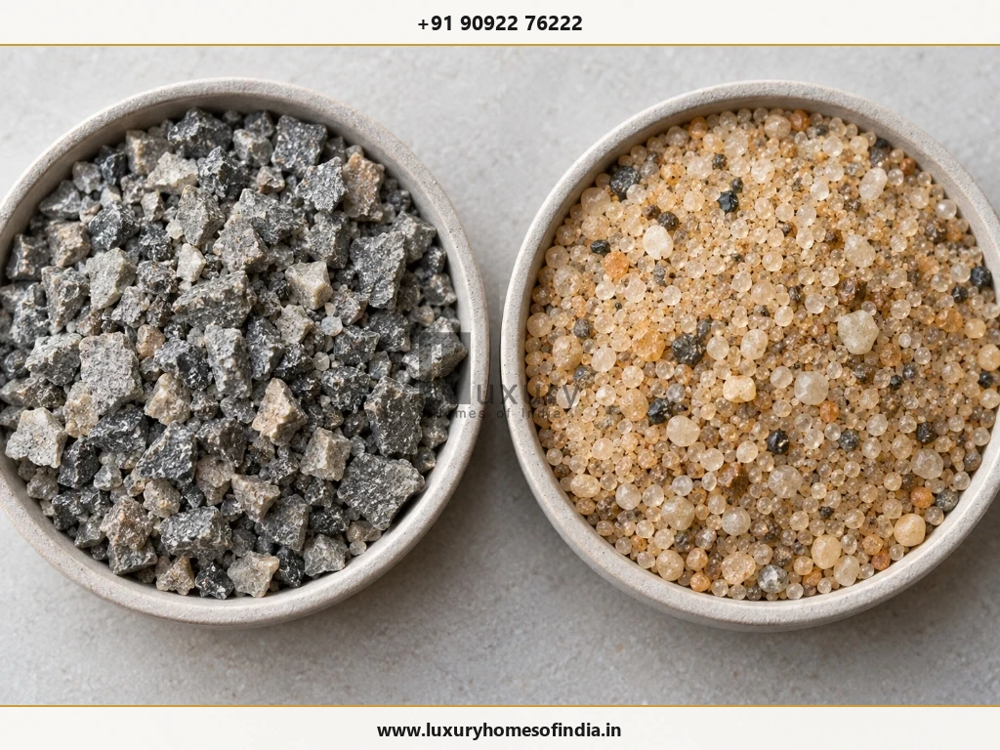
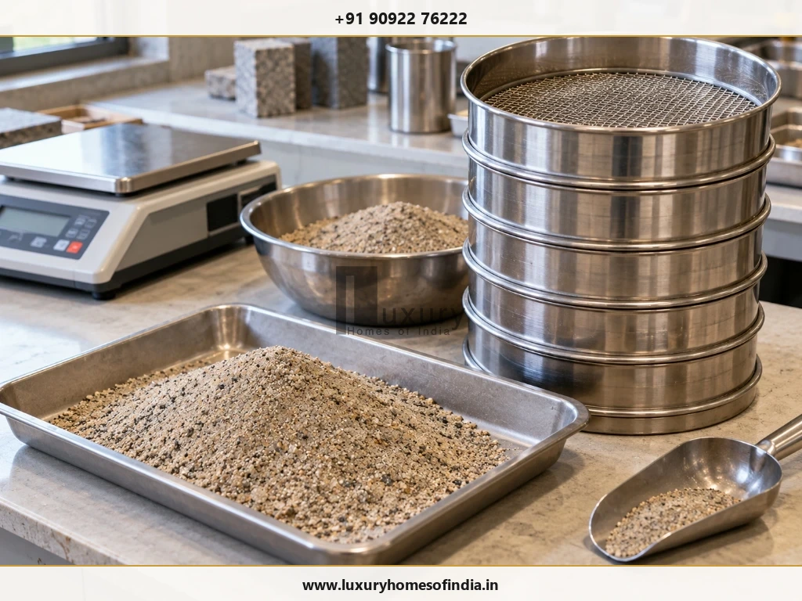
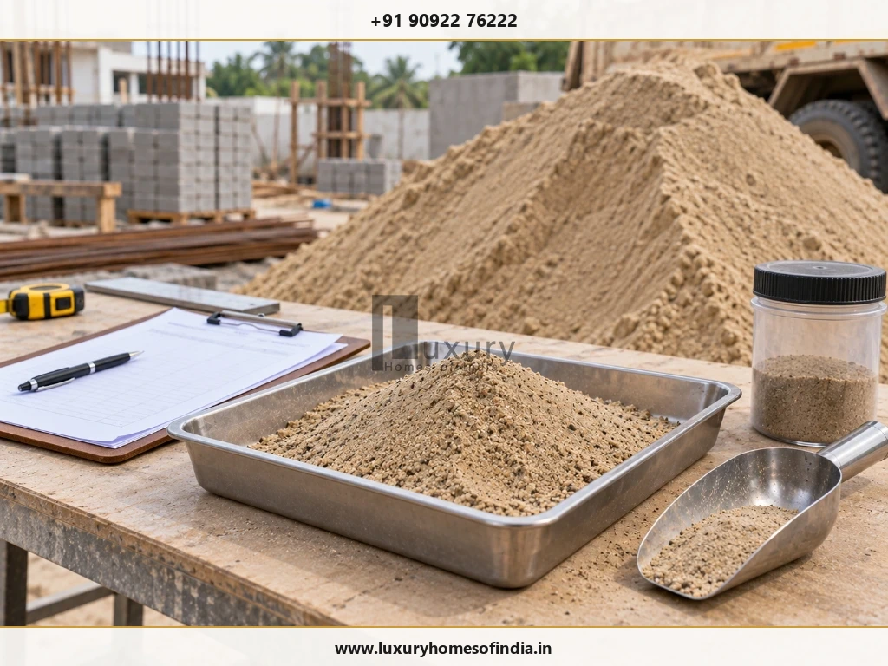
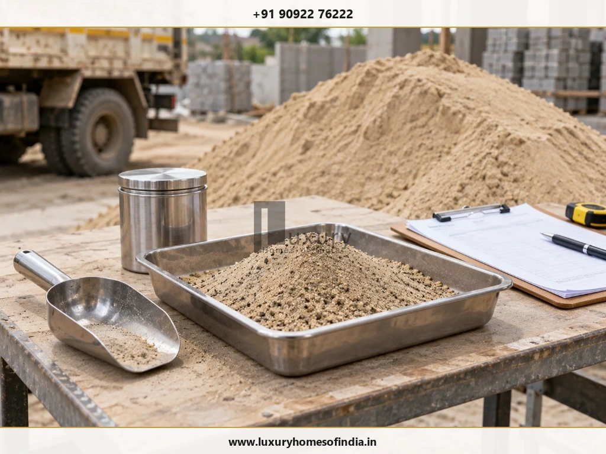

Executive Summary: M-Sand vs River Sand
Choosing between manufactured sand (M-Sand) and natural river sand depends on where the material will be used, whether it meets the relevant quality requirements and how it performs in the specified construction mix. For homeowners in Chennai, neither option is automatically superior in every situation.
Properly manufactured and graded M-Sand is an outstanding, cost-effective choice for structural RCC work (footings, columns, beams, slabs) due to its controlled grading and high mechanical interlock. Legally sourced river sand remains a workable option for masonry and fine plastering when clean and free of silt. The practical rule is to verify the material against IS 383:2016 specifications and test deliveries on-site before incorporation.

M-Sand vs River Sand at a Glance
Before diving into structural performance, examine how these two fine aggregate types compare across fundamental engineering, cost, and environmental metrics:
| Factor | Manufactured Sand (M-Sand) | Natural River Sand |
|---|---|---|
| Source Material | Mechanically crushed hard granite or basalt rock. | Naturally weathered riverbed sediment deposits. |
| Typical Particle Shape | Angular, cubical, rough surface texture. | Smooth, rounded to sub-rounded particles. |
| Grading & Uniformity | Precisely controlled through 3-stage crushing and vibrating screens (Zone II / Zone IV). | Variable depending on natural sedimentation, quarry location, and river flow. |
| Fines & Cleanliness | Zero organic impurities; micro-fines controlled by air classification or wet washing. | May contain unwanted silt, clay lumps, mica, organic decay, or marine salts. |
| Structural Concrete | Highly suitable; superior mechanical interlocking yields high compressive strength. | Suitable when clean and graded, offering smooth workability. |
| Plastering Suitability | Requires specialized fine Plastering M-Sand (P-Sand, Zone IV). | Historically preferred for ease of trowelling, provided silt is below 5%. |
| Cost in Chennai | Economical; approx. ₹45 to ₹65 per cu ft delivered. | High; approx. ₹110 to ₹150+ per cu ft due to quarry restrictions. |
| Environmental Impact | Quarrying impacts managed; preserves natural riverbeds and groundwater tables. | Causes severe riverbed erosion, depletes groundwater, and faces strict mining bans. |
1. What Is M-Sand?
Manufactured Sand (M-Sand) is an engineered fine aggregate produced by crushing hard, high-density granite rocks in quarry processing plants. Unlike primitive crusher dust, quality M-Sand undergoes three distinct manufacturing stages: primary jaw crushing, secondary cone crushing, and tertiary Vertical Shaft Impact (VSI) shaping, followed by hydro-cyclone washing or air classification.
The VSI shaping process is vital: it knocks off sharp flaky edges, converting jagged rock splinters into rounded-cubical particles that mimic the natural flow properties of sand while preserving optimal interlock for concrete.

Key Advantages of M-Sand
- Controlled Sieve Grading: Manufactured to match exact IS 383 Zone II parameters, eliminating voids in concrete.
- Zero Organic Impurities: Free from decayed leaves, silt, shells, or marine chlorides that corrode steel rebar.
- Consistent Supply in Chennai: Abundantly available from certified quarries around Kanchipuram and Chengalpattu.
What to Watch Out For
- Excess Micro-Fines: Unwashed crusher dust masquerading as M-Sand increases water demand and causes shrinkage cracks.
- Plant-to-Plant Variability: Quality depends strictly on VSI shaping; always demand batch test reports.
2. What Is River Sand?
River sand is a naturally occurring fine aggregate dredged from riverbeds and floodplains. Shaped over thousands of years by hydraulic tumbling, its particles are smooth and rounded, which imparts natural workability and flowability to fresh cement mortar.
Historically, river sand was the default choice for construction across Tamil Nadu. However, over-exploitation has severely damaged river ecosystems and lowered groundwater tables, leading to strict environmental bans by the Tamil Nadu government and the National Green Tribunal (NGT).
3. Which Sand Is Better for Concrete?
For structural reinforced concrete (foundations, grade beams, columns, and roof slabs), quality M-Sand is widely considered superior by civil engineers and structural consultants.
The primary reason lies in particle physics: M-Sand's angular, cubical facets create high mechanical interlocking within the cement-aggregate matrix. When paired with proper concrete vibration, this interlock produces higher flexural and compressive strength compared to the smooth, ball-bearing action of rounded river sand.

Questions Homeowners Must Ask Their Contractor:
- Is the fine aggregate certified to comply with IS 383:2016 Zone II grading for structural concrete?
- Has the concrete mix design (e.g. M20, M25, M30) been tested in a lab using this specific source of M-Sand?
- How will the site team adjust water dosage to account for surface moisture and bulking during wet monsoon spells?
- Are cylinder or cube compression tests (7-day and 28-day) documented for every roof slab pour?
4. Which Sand Is Better for Plastering?
Plastering requires a much finer aggregate than concrete. Coarse particles suitable for columns will drag under the mason's trowel, causing rough gouges and uneven wall surfaces.
For plastering, you must specify Plastering M-Sand (P-Sand). P-Sand is specially screened to pass through a 2.36 mm sieve, falling into IS 383 Zone IV grading. It is washed to remove clay while retaining just enough ultra-fine micro-particles to provide smooth spreadability and buttery workability.
Clean, screened river sand remains a popular choice among traditional masons for its effortless trowelling. However, if river sand contains more than 5% organic silt, the plaster will develop spiderweb shrinkage cracks (crazing) as the water evaporates.
5. Which Sand Is Better for Masonry?
In brickwork, solid concrete blocks, and AAC block masonry, mortar serves two functions: distributing vertical compressive loads and sealing joints against moisture penetration.
Both M-Sand and clean river sand perform admirably in 1:5 or 1:6 cement-sand masonry mortars. M-Sand provides superior tensile bond strength between bricks, while river sand offers marginally smoother raking of mortar joints. For thin-joint AAC block work, specialized pre-mixed block adhesives are generally preferred over site-mixed sand mortar.
6. Is M-Sand Cheaper Than River Sand in Chennai?
Yes, M-Sand is dramatically more economical in the Chennai metropolitan area. On average, M-Sand costs 50% to 65% less than legally sourced river sand.
| Material Grade | Approximate Price in Chennai (per Cubic Foot) | Delivered Price per Unit (100 cu ft / 1 Unit) |
|---|---|---|
| Concrete M-Sand (Zone II) | ₹45 – ₹65 / cu ft | ₹4,500 – ₹6,500 per unit |
| Plastering P-Sand (Zone IV) | ₹55 – ₹75 / cu ft | ₹5,500 – ₹7,500 per unit |
| River Sand (Govt Depot / PWD) | ₹110 – ₹145+ / cu ft | ₹11,000 – ₹14,500+ per unit |
Note: Prices vary across Chennai locations (ECR, OMR, Anna Nagar, Tambaram) based on lorry transit distances, unloading access, and minimum load quantities (typically 2 to 4 units per tipper lorry).
7. How to Check Sand Quality Before Purchase
Never allow aggregate tipper lorries to dump directly into your construction site without conducting mandatory field quality inspections:


6-Step Field & Lab Quality Assurance Protocol:
8. What Does IS 383:2016 Say About Sand?
The official engineering benchmark across India is IS 383:2016 (Third Revision) — Coarse and Fine Aggregate for Concrete — Specification, published by the Bureau of Indian Standards (BIS) and reaffirmed in July 2025.
Crucially, IS 383 explicitly recognises and endorses Crushed Stone Sand (M-Sand) on par with natural sand, categorizing fine aggregates into four grading zones (Zone I coarse to Zone IV fine). It establishes stringent thresholds:
- Maximum Silt / Micro-Fines: Limited to 15% for crushed stone sand with additive mineral admixture, and 12% without.
- Organic Impurities: Must test negative when treated with sodium hydroxide solution.
- Deleterious Materials: Strict limits on clay lumps, coal, and light particles under 1.0%.
Access the official BIS documentation: Bureau of Indian Standards — IS 383:2016 Official Portal.
9. Common Mistakes to Avoid When Buying Sand
- Buying coarse M-Sand for wall plastering: Coarse concrete sand creates rough, gouged plaster that cracks upon drying. Always buy dedicated P-Sand.
- Purchasing unwashed stone dust: Raw quarry dust contains excessive powder fines that absorb water, causing severe weakness in concrete.
- Accepting unverified river sand: Risking saline coastal sand that triggers devastating reinforcement steel corrosion within 5 years.
- Switching sand suppliers mid-construction without re-testing: Changing fine aggregates changes the water-cement ratio and concrete strength.
- Dumping sand on muddy ground: Storing aggregate directly on soil contaminates the bottom 6 inches with dirt and debris. Always dump on paved concrete or heavy tarpaulins.
Frequently Asked Questions
Build with Engineered Material Precision
At Luxury Homes of India, every fine aggregate delivery undergoes rigorous laboratory sieve grading and on-site silt testing before batching. We engineer homes designed to last generations.
Written by Luxury Homes of India Editorial
Our engineering editorial desk comprises senior structural consultants, project managers, and quality-assurance engineers specializing in high-performance residential construction across Chennai and Tamil Nadu.
Reviewed by: LHI In-House Technical Team